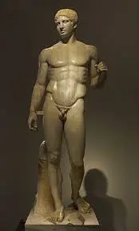
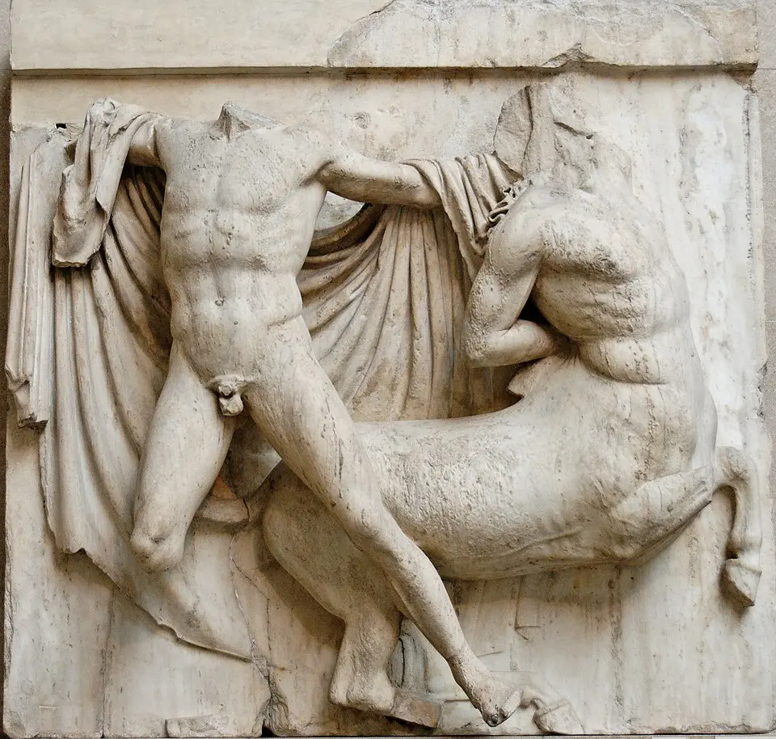
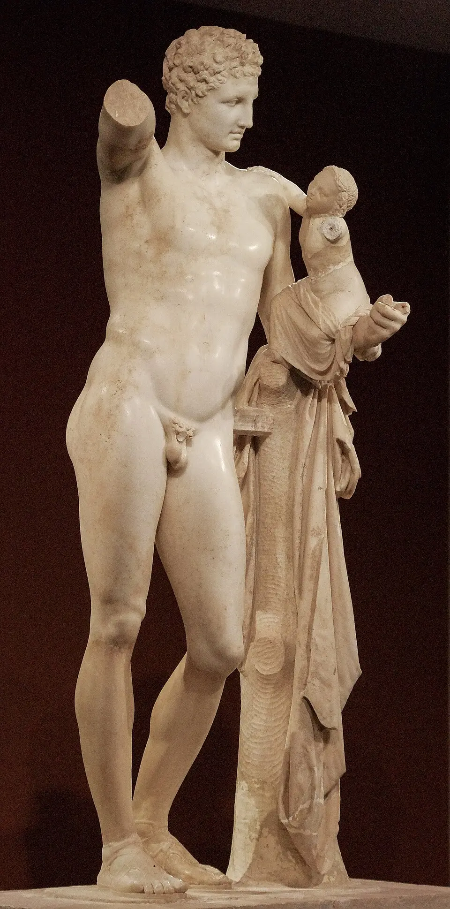
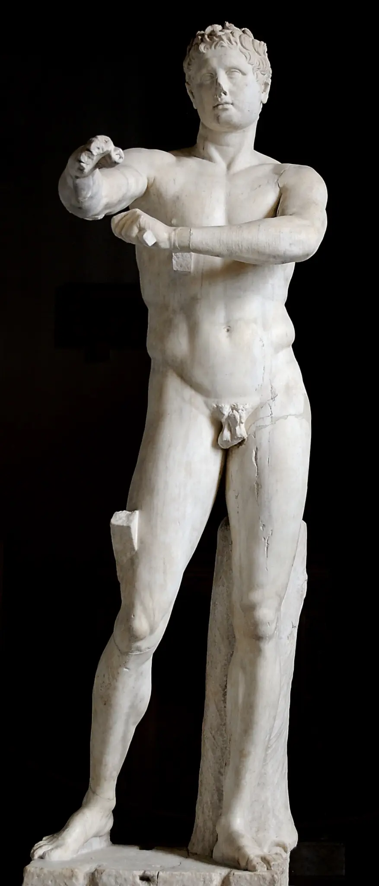
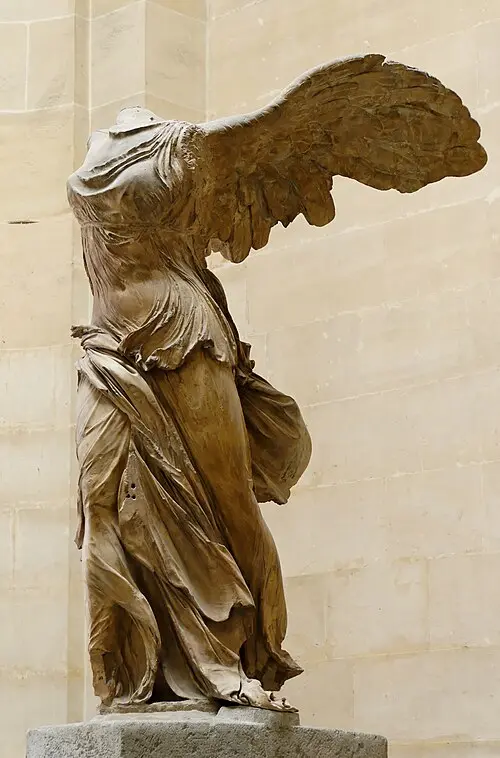
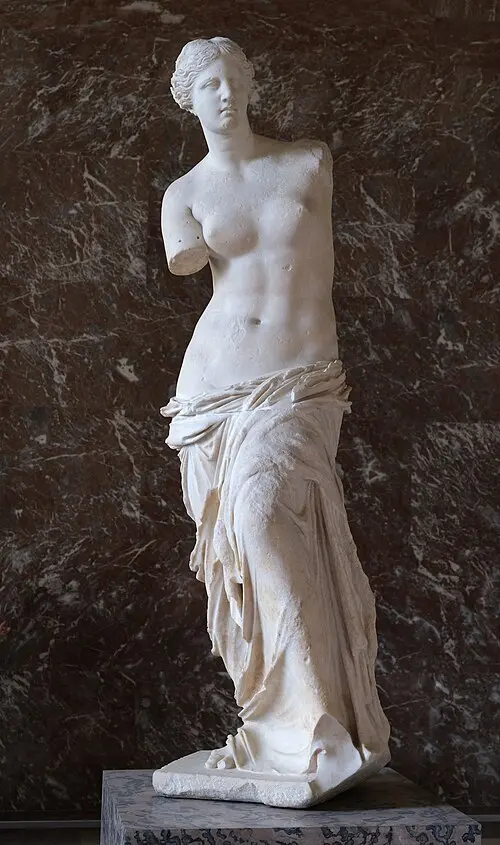
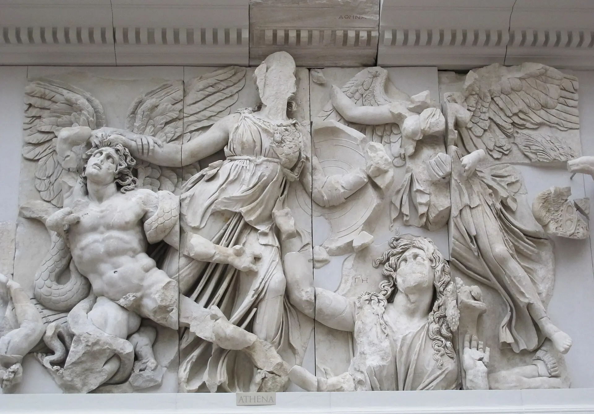

Contingut
Laboratori PAU · 14 obres imprescindibles
Pauta de resposta
- Identifica tipologia, autoria, cronologia, estil i ubicació.
- Analitza material, tècnica, composició, espai, moviment i llenguatge.
- Interpreta tema, iconografia, funció, encàrrec i recepció.
- Contextualitza polis o regne, religió, societat i moment històric.
- Relaciona antecedents, aportacions, influències i patrimoni.
Desplega cada obra. Després tanca la fitxa i intenta reconstruir-la amb cinc paraules clau.
1 · Partenó

Identificació i classificació. El Partenó és un temple grec construït entre el 447 i el 432 aC a l’Acròpolis d’Atenes. Fou projectat pels arquitectes Ictinos i Cal·lícrates sota la direcció artística de Fídies i promogut per Pèricles. Pertany al classicisme grec del segle V aC. És un edifici religiós de planta rectangular, principalment d’ordre dòric, encara que incorpora solucions jòniques. Està dedicat a Atena Pàrtenos, divinitat protectora de la polis.
Materials, planta i estructura. Està construït amb marbre pentèlic sobre un basament de tres escalons, l’últim dels quals és l’estilobat. És un temple perípter i octàstil: huit columnes a les façanes i dèsset als costats, proporció que dona al conjunt una aparença equilibrada. L’interior s’organitza en pronaos, naos o cel·la i opistòdom. La naos, dividida per una doble columnata dòrica en forma d’U, allotjava la colossal estàtua criselefantina d’Atena Pàrtenos realitzada per Fídies. L’opistòdom, amb quatre columnes jòniques, custodiava el tresor de la deessa i de la Lliga de Delos.
Anàlisi formal. L’edifici respon al sistema arquitravat grec: les columnes dòriques, sense base i amb capitell senzill, sostenen un entaulament format per arquitrau, fris de tríglifs i mètopes i cornisa, coronat als extrems per frontons triangulars. La recerca de proporció, simetria i harmonia no és mecànica, sinó visual. Per corregir les deformacions de la percepció, l’estilobat i l’entaulament presenten una lleugera curvatura; les columnes s’inclinen subtilment cap a l’interior, tenen èntasi i augmenten de gruix als cantons, mentre que els intercolumnis angulars són més estrets. Aquestes correccions òptiques fan que el temple parega recte, estable i orgànic.
Decoració escultòrica i significat. El programa escultòric, dirigit per Fídies i originalment policromat, integrava arquitectura, religió i propaganda cívica. Les noranta-dues mètopes representaven combats mítics —Gigantomàquia, Centauromàquia, Amazonomàquia i guerra de Troia— que simbolitzaven la victòria de l’ordre i la civilització sobre el caos. Els frontons narraven el naixement d’Atena i la seua disputa amb Posidó pel patronatge de l’Àtica. A l’exterior de la cel·la, un fris jònic continu representava la processó de les Panatenees i incorporava simbòlicament la ciutadania atenesa al món heroic i diví.
Funció i context historicoartístic. El Partenó tenia una funció religiosa, votiva, política i econòmica: custodiava la imatge de la deessa i el tresor, i era el centre simbòlic del programa monumental de l’Acròpolis. Es construí durant el govern de Pèricles, després de les guerres mèdiques, quan Atenes dirigia la Lliga de Delos i vivia el moment de màxima esplendor democràtica, cultural i imperial. La reconstrucció de l’Acròpolis commemorava la victòria sobre els perses, però també legitimava l’hegemonia atenesa, finançada en bona part amb els tributs dels aliats.
Models, influències i valoració. El temple perfecciona la tradició dòrica arcaica i combina dos llenguatges: la solidesa monumental del dòric i la continuïtat narrativa del fris jònic. Es convertí en paradigma de bellesa basada en mesura, proporció i equilibri, i influí decisivament en l’arquitectura romana i, segles després, en el Renaixement, el neoclassicisme i nombrosos edificis institucionals occidentals. La seua història posterior —transformació en església i mesquita, explosió de 1687 i dispersió de les escultures, especialment els marbres conservats al British Museum— el convertix també en un cas essencial per debatre conservació, espoli i restitució del patrimoni.
Conclusió PAU. El Partenó sintetitza els ideals del classicisme grec: racionalitat constructiva, perfecció visual, integració de les arts i subordinació de la forma a un missatge religiós i polític. No és només un temple dedicat a Atena, sinó la representació monumental de la identitat i del poder d’Atenes en el segle V aC.
2 · Tribuna de les Cariàtides de l’Erectèon

Identificació i classificació. La Tribuna de les Cariàtides forma part de l’Erectèon, temple construït entre el 421 i el 406 aC al sector nord de l’Acròpolis d’Atenes, durant el classicisme grec. L’edifici, d’autoria discutida i tradicionalment relacionat amb Mnesicles, és d’ordre jònic i presenta una planta irregular perquè havia d’adaptar-se al desnivell del terreny i reunir diversos espais de culte. La tribuna se situa al costat sud i rep el nom de les sis figures femenines que substituïxen les columnes.
Materials, tècnica i estructura. Tant el temple com les figures estan realitzats en marbre pentèlic. La tribuna és un pòrtic rectangular elevat sobre un podi i cobert per un sostre arquitravat. Sis escultures femenines —quatre al front i dos als laterals— sostenen l’entaulament sobre el cap mitjançant un element circular que actua com a capitell. Les figures conservades a l’Acròpolis són còpies: cinc originals es troben al Museu de l’Acròpolis i una altra al British Museum de Londres.
Anàlisi formal. Les cariàtides combinen funció arquitectònica i forma humana. Cada figura es recolza principalment sobre una cama, mentre l’altra queda flexionada, fet que crea un contrapposto suau. La disposició alterna de les cames manté la simetria i dirigix visualment el pes cap a l’interior del pòrtic. Els plecs llargs i verticals dels pèplums recorden les estries d’una columna, mentre els plecs corbs sobre les cames aporten volum i naturalisme. Els cabells, densos i recollits, reforcen el coll, la zona estructuralment més fràgil. Malgrat suportar l’entaulament, les figures transmeten serenitat, equilibri i dignitat, ideals característics del classicisme.
Funció, iconografia i significat. La tribuna monumentalitzava l’accés a un espai sagrat vinculat tradicionalment a la tomba del rei mític Cècrops. Les figures no són retrats individuals, sinó joves idealitzades que poden interpretar-se com a donzelles participants en cerimònies religioses. El terme «cariàtide» fou difós posteriorment per Vitruvi i la seua identificació exacta continua sent debatuda. En qualsevol cas, la substitució de la columna pel cos femení integra escultura i arquitectura i dota el suport d’un valor ritual i simbòlic.
Context historicoartístic. L’Erectèon es construí durant la guerra del Peloponés, en una etapa molt menys favorable per a Atenes que la del Partenó. Ocupava un espai especialment sagrat, relacionat amb Atena, Posidó, Erecteu i altres cultes ancestrals de la ciutat. La necessitat de respectar diferents santuaris, altures i tradicions explica la seua planta asimètrica, oposada a la regularitat del Partenó. Aquesta adaptació mostra que l’arquitectura grega no obeïa únicament a fórmules abstractes, sinó també a les condicions del lloc i del ritual.
Influències i valoració. La tribuna és un dels exemples més destacats de suport antropomorf de la història de l’arquitectura. Té antecedents en figures femenines de l’època arcaica, com les korai, i influí en l’arquitectura romana, renaixentista, barroca i neoclàssica. Les cariàtides foren reinterpretades en façanes, porxos, monuments i mobiliari de tota Europa. La dispersió dels originals permet també reflexionar sobre conservació, substitució per còpies i restitució del patrimoni.
Conclusió PAU. La Tribuna de les Cariàtides sintetitza l’equilibri clàssic entre bellesa i funció: les figures mantenen la seua autonomia escultòrica i, al mateix temps, actuen com a elements portants. La seua elegància jònica, l’adaptació al lloc i la unió d’arquitectura, escultura i significat religiós la convertixen en una de les creacions més originals de l’Acròpolis.
3 · Temple d’Atena Nike

Identificació i classificació. El Temple d’Atena Nike és un edifici religiós grec projectat per Cal·lícrates i construït aproximadament entre el 427 i el 424 aC a l’Acròpolis d’Atenes. Pertany al classicisme del segle V aC i és un temple d’ordre jònic, tetràstil i amfipròstil: presenta quatre columnes a la façana oriental i quatre a l’occidental, però no en té als costats. Està dedicat a Atena Nike, és a dir, Atena com a divinitat protectora de la victòria.
Emplaçament, materials i planta. Està construït amb marbre pentèlic i s’alça sobre un antic bastió micènic, a la dreta dels Propileus. La posició elevada domina l’accés a l’Acròpolis i reforça la visibilitat del temple des de la ciutat. La planta és rectangular i de dimensions reduïdes, amb una cel·la quasi quadrada precedida i seguida per dos pòrtics. La falta d’espai al bastió explica la solució amfipròstila, compacta i perfectament adaptada a l’emplaçament.
Anàlisi formal. Les columnes jòniques són esveltes, tenen base motlurada, fust estriat i capitell de volutes. Sostenen un entaulament format per arquitrau de tres bandes, fris continu i cornisa. Les proporcions elegants, la claredat geomètrica i l’equilibri entre verticals i horitzontals produïxen una sensació de lleugeresa. Les columnes angulars resolen visualment el canvi de façana i les quatre cares del temple formen un volum unitari. Malgrat la petita escala, l’aïllament sobre el bastió i la precisió de les proporcions li conferixen una intensa monumentalitat.
Decoració escultòrica. El fris jònic continu combinava una assemblea de déus a la façana oriental amb escenes de combats entre grecs i perses i entre grecs a les altres cares, relacionant el món diví amb la història militar d’Atenes. Cap al 410 aC s’afegí una balustrada de marbre per protegir el desnivell del bastió. Els seus relleus representaven diverses figures de Nike en actituds quotidianes o rituals, entre les quals destaca la Nike ajustant-se la sandàlia, caracteritzada pels «draps mullats», que revelen l’anatomia sota plecs fins i dinàmics.
Funció i significat. El temple acollia el culte a Atena victoriosa i expressava l’esperança de triomf i protecció militar. A l’interior hi havia una imatge de la deessa. La tradició posterior l’anomenà també Atena Nike Àptera —«Victòria sense ales»— i explicà simbòlicament que, sense ales, la victòria no podria abandonar Atenes; aquesta interpretació, encara que popular, no és completament segura. La ubicació al costat de l’entrada convertia el monument en un missatge visible de memòria, confiança i poder.
Context historicoartístic. El projecte s’havia plantejat després de les guerres mèdiques, però la construcció es realitzà durant la guerra del Peloponés, quan Atenes s’enfrontava a Esparta i necessitava reafirmar la seua identitat i capacitat militar. El temple formava part del programa monumental de l’Acròpolis iniciat per Pèricles, encara que la seua escala i elegància contrasten amb la grandiositat dòrica del Partenó. L’elecció de l’ordre jònic accentua el caràcter refinat del conjunt.
Influències i valoració. El Temple d’Atena Nike és un model essencial del petit temple jònic i de l’adaptació entre arquitectura i paisatge urbà. La seua tipologia amfipròstila, la nitidesa del volum i les proporcions harmonioses influïren en l’arquitectura grecoromana i foren recuperades pel neoclassicisme. La reconstrucció moderna del temple, desmuntat en època otomana i posteriorment recompost, permet estudiar també els criteris i límits de l’anastilosi.
Conclusió PAU. El Temple d’Atena Nike demostra que la monumentalitat grega no depén únicament de la grandària, sinó de la proporció, l’emplaçament i la integració de totes les arts. La seua arquitectura jònica, el programa escultòric i la funció commemorativa convertixen un edifici menut en una poderosa afirmació religiosa i política d’Atenes.
4 · Teatre d’Epidaure

Identificació i classificació. El Teatre d’Epidaure és una obra d’arquitectura civil grega de la segona meitat del segle IV aC, situada al santuari d’Asclepi, al Peloponés. Se sol atribuir a Policlet el Jove, segons el testimoni de Pausànies. Pertany a l’època clàssica tardana. La seua funció teatral s’integrava en un complex religiós i terapèutic.
Materials, planta i estructura. La càvea o graderia, construïda en pedra i encaixada en el vessant d’un turó, abraça una orquestra quasi circular, espai del cor. Dos accessos laterals o párodoi comuniquen l’orquestra amb l’exterior; davant de la graderia se situava l’edifici escènic, avui conservat només parcialment. La graderia original, amb 34 fileres, fou ampliada en època hel·lenística amb 21 fileres més. Els passadissos concèntrics i les escales radials dividixen els seients en sectors i ordenen l’entrada del públic.
Anàlisi formal. La planta combina cercles concèntrics i eixos radials, cosa que afavorix la visibilitat des de la graderia i orienta l’atenció cap a l’orquestra. La inclinació natural del terreny permet distribuir una gran quantitat d’espectadors sense alçar una estructura portadora massissa. La pedra i la disposició dels seients contribuïxen a una acústica notable, encara que no cal atribuir-la a cap mecanisme misteriós. La forma construïda dialoga amb la muntanya i el paisatge, que continuen visibles des del teatre.
Funció i significat. Acollia representacions dramàtiques i musicals vinculades a les celebracions del santuari d’Asclepi. El teatre grec era un espai d’experiència col·lectiva: el públic compartia relats mítics, conflictes morals i preguntes sobre la vida de la polis. En Epidaure, esta dimensió cultural es relacionava amb el caràcter religiós del recinte, sense que l’edifici mateix fora un temple.
Context historicoartístic. El desenvolupament del teatre grec acompanya la vida cívica i religiosa de les polis. Al segle IV aC els espais teatrals de pedra consoliden una tipologia que articula graderia, orquestra i escena. Epidaure exemplifica l’atenció grega a la proporció, la funció i la integració de l’arquitectura en el lloc.
Influències i valoració. És una de les mostres millor conservades del teatre grec i un referent per a estudiar l’arquitectura d’espectacles. El model de graderia semicircular influí en teatres posteriors, encara que el teatre romà transformà especialment la forma de l’orquestra i la relació entre càvea i edifici escènic.
Conclusió PAU. L’obra permet relacionar forma i funció: l’adaptació al pendent, la geometria de la graderia, la visibilitat i l’acústica fan possible la participació d’una comunitat en la representació dramàtica dins d’un santuari grec.
5 · Kouros d’Anàvissos

Identificació i classificació. El Kouros d’Anàvissos, també anomenat Kroisos, és una escultura grega arcaica d’autor desconegut, datada cap al 530 aC. És una estàtua exempta de marbre, de grandària superior a la natural, trobada prop d’Anàvissos, a l’Àtica, i conservada al Museu Arqueològic Nacional d’Atenes. Era un monument funerari dedicat al jove Kroisos.
Materials i tècnica. Està tallat en marbre i treballat per tots els costats. La superfície conserva indicis de la policromia que completava la imatge original. L’escultor diferencia masses musculars, cabells i trets facials mitjançant un modelatge més suau que el dels primers kouroi; la rigidesa de l’esquema general, però, continua perceptible.
Anàlisi formal. El jove apareix nu, dret i frontal, amb la cama esquerra avançada, els braços prop del cos i els punys tancats. La simetria axial i la postura estable recorden models escultòrics egipcis, tot i que la figura grega se separa del bloc i no recolza sobre un pilar posterior. Els cabells ordenats en trenes i el somriure arcaic mantenen convencions de l’època. El pit, l’abdomen, els genolls i les cames mostren una observació anatòmica creixent; avançar una cama encara no implica un desplaçament real del pes ni un contrapposto.
Funció i significat. Una inscripció de la base convidava el vianant a detindre’s i lamentar Kroisos, mort en combat. La figura funcionava com a marcador de tomba i record públic del difunt. El nu juvenil expressa vigor i ideal heroic; no pretén reproduir de manera individual i fidel la fesomia de Kroisos.
Context historicoartístic. A l’època arcaica, les polis gregues desenvolupen tipus escultòrics com el kouros i la koré, utilitzats en contextos funeraris i votius. El contacte amb Egipte ajuda a explicar la frontalitat i l’esquema de la figura dempeus, mentre que els escultors grecs avancen cap a una anatomia més coherent i una major autonomia del cos en l’espai.
Influències i valoració. Comparat amb els kouroi anteriors, el modelatge és més carnós i naturalista, encara que subsistixen la frontalitat i el somriure convencional. És una peça útil per a explicar l’evolució gradual, sense identificar l’art arcaic simplement com un classicisme incomplet.
Conclusió PAU. El Kouros d’Anàvissos combina una funció funerària concreta amb un ideal de joventut. La seua postura convencional i el seu modelatge anatòmic permeten situar-lo en el procés de transformació de l’escultura grega arcaica.
6 · Auriga de Delfos

Identificació i classificació. L’Auriga de Delfos és una escultura exempta grega en bronze, d’autor desconegut, datada entorn del 478–474 aC i conservada al Museu Arqueològic de Delfos. Pertany a l’estil sever, fase de transició entre l’arcaisme i el classicisme. Formava part d’un grup votiu relacionat amb una victòria en les carreres de carros dels Jocs Pítics.
Materials i tècnica. La figura fou fosa en bronze per peces mitjançant la tècnica de la cera perduda i posteriorment ensamblada. Presenta detalls en materials diferents, com els ulls incrustats, que intensificaven l’efecte de presència. Del conjunt original, que incloïa el carro i els cavalls, es conserven altres fragments; la figura de l’auriga ha arribat de manera excepcionalment completa.
Anàlisi formal. L’auriga es manté dret amb les regnes a les mans i porta una túnica llarga, el xystis, cenyida per una corretja. Els plecs verticals de la part inferior recorden l’estriat d’una columna, mentre que al tors i als braços s’adapten millor al volum corporal. El cap gira lleugerament i els peus es disposen amb una subtil diferència d’orientació: estos desplaçaments animen una composició predominantment vertical. El rostre, seré i concentrat, abandona el somriure arcaic; la precisió dels peus, les mans i la mirada aporta naturalisme sense gesticulació.
Funció i significat. El grup era una ofrena al déu Apol·lo en el seu santuari de Delfos. La dedicatòria s’associa amb Policel, governant de Gela, i amb una victòria atlètica, encara que la identificació exacta de la victòria i del comitent ha sigut objecte de discussió. L’auriga expressa prestigi i èxit en una competició consagrada als déus, juntament amb un ideal de domini de si mateix.
Context historicoartístic. Després de les guerres mèdiques, l’escultura del primer classicisme busca formes corporals més creïbles i una expressió continguda. L’estil sever substituïx molts convencionalismes arcaics per una gravetat nova, sense renunciar a l’equilibri i a la idealització.
Influències i valoració. La conservació d’un original grec en bronze és excepcional, perquè moltes obres d’este material foren refoses i només es coneixen per còpies. L’Auriga és un testimoni fonamental per a estudiar la tècnica del bronze i la transició de la frontalitat arcaica al naturalisme clàssic.
Conclusió PAU. La serenitat del rostre, la postura continguda i el tractament precís del cos definixen l’estil sever. La seua condició d’ofrena vincula la forma escultòrica amb els santuaris i les competicions de la Grècia antiga.
7 · Discòbol

Identificació i classificació. El Discòbol és una escultura grega atribuïda a Miró, realitzada cap al 460–450 aC, en el primer classicisme. L’original era de bronze i s’ha perdut; la composició es coneix sobretot per còpies romanes de marbre, entre les quals destaca la Lancellotti. Representa un atleta nu en el moment previ a llançar el disc.
Materials i transmissió. El bronze de l’original permetia projectar braços i cames en l’espai amb més llibertat que les còpies de marbre, que sovint necessiten suports afegits. Per això convé distingir la invenció compositiva de Miró de les solucions materials i de restauració de cada còpia romana. La comparació de còpies ajuda a reconstruir una obra que no s’ha conservat directament.
Anàlisi formal. L’atleta flexiona les cames i gira el tors; un braç sosté el disc darrere del cos i l’altre equilibra l’acció. La silueta descriu arcs i diagonals que concentren l’energia en un instant de màxima tensió abans del llançament. Malgrat l’aparença de moviment, les extremitats s’organitzen en una composició clara, pensada especialment per a una vista principal. L’anatomia està idealitzada i el rostre roman seré: Miró estudia la mecànica del gest sense representar l’esforç facial d’una acció real.
Funció i significat. La figura exalta l’atleta i la pràctica física, valors importants en la cultura grega. No identifica necessàriament un esportista concret: convertix un gest fugaç en una imatge ideal i duradora del cos disciplinat. El nu masculí remet a l’admiració per la bellesa i les capacitats humanes.
Context historicoartístic. Al segle V aC, els escultors grecs abandonen progressivament la rigidesa arcaica i investiguen el pes, el moviment i les proporcions del cos. Miró destaca per representar una acció complexa mantenint una estructura equilibrada; esta recerca conviu amb el caràcter ideal del classicisme.
Influències i valoració. És una referència decisiva en la representació escultòrica del moviment. També mostra un límit del primer classicisme: el cos s’activa amb força, però l’expressió facial i la composició responen a un ideal de serenitat i llegibilitat més que a la captació naturalista d’un instant fotogràfic.
Conclusió PAU. El Discòbol sintetitza moviment i ordre: la torsió del cos i les línies corbes expressen l’acció, mentre que la vista principal i el rostre impassible revelen el control formal de Miró.
8 · Dorífor

Identificació i classificació. El Dorífor o «portador de llança» és una obra de Policlet, escultor grec de la segona meitat del segle V aC, datada habitualment cap al 450–440 aC. L’original de bronze s’ha perdut i es coneix per còpies romanes de marbre, com la conservada al Museu Arqueològic Nacional de Nàpols. És una escultura exempta de cos sencer i una obra central del classicisme ple.
Materials i transmissió. La figura original es va fondre en bronze; les còpies de marbre poden incorporar suports i variacions que no formaven part del model inicial. La llança, que portaria sobre l’espatla esquerra, no es conserva en la còpia de Nàpols. La reconstrucció de l’original i de les seues proporcions s’ha de fer amb prudència a partir de les diferents còpies i dels testimonis antics.
Anàlisi formal. El jove nu recolza el pes sobre la cama dreta, mentre que l’esquerra queda flexionada i endarrerida. El maluc s’inclina en un sentit i la línia de les espatles en el contrari; el braç dret descansa i l’esquerre assumix l’acció de portar la llança. Esta correspondència creuada de membres tensos i relaxats s’anomena quiasme; el desplaçament del pes, contrapposto. La figura deixa arrere la simetria rígida dels kouroi i aconseguix un equilibri que suggerix moviment possible sense perdre estabilitat. La musculatura és versemblant però idealitzada, i el rostre evita l’expressió individual.
Cànon i significat. Policlet formulà en el tractat perdut Cànon una teoria de la bellesa basada en la relació proporcionada entre les parts del cos i el conjunt. El Dorífor s’interpreta com una demostració d’eixa recerca de symmetría, harmonia de proporcions, encara que no podem reduir-la amb certesa a una única fórmula numèrica. Representa un ideal atlètic masculí, no el retrat d’una persona determinada.
Context historicoartístic. En el classicisme grec del segle V aC, l’estudi racional del cos humà es relaciona amb els ideals de mesura, equilibri i perfecció formal. La pràctica atlètica i l’interés pels nus masculins proporcionen models i temes, mentre que el bronze facilita postures més obertes i complexes.
Influències i valoració. El sistema de proporcions i el contrapposto del Dorífor tingueren una influència duradora en l’escultura romana, renaixentista i acadèmica. El seu valor com a model històric no obliga a prendre el cos masculí idealitzat com una norma universal de bellesa.
Conclusió PAU. El Dorífor unix observació anatòmica, proporció i equilibri dinàmic. El pes sobre una cama i el quiasme fan visible el cànon de Policlet i expliquen la seua importància en la història de l’escultura occidental.
9 · Mètopa del Partenó

Identificació. Taller de Fídies; c. 447–442 aC; relleu arquitectònic en marbre.
Anàlisi formal. Alt relleu adaptat al quadrat, oposició de cossos, ritme i tensió. La policromia original reforçava la lectura.
Funció i significat. Els combats mítics simbolitzen el triomf de l’ordre sobre el caos i poden al·ludir a victòries històriques.
Context. Programa polític i religiós de l’Acròpolis de Pèricles.
Rellevància. Integra narració, arquitectura i ideologia; permet estudiar conservació fragmentària i descontextualització museística.
10 · Hermes amb Dionís infant

Identificació. Atribuït a Praxíteles; segle IV aC; marbre; Museu d’Olímpia.
Anàlisi formal. Corba praxiteliana, suport lateral, superfícies suaus i relació de mirades i gestos; composició relaxada.
Funció i significat. Escena divina tractada amb intimitat i humanització; possiblement vinculada al culte.
Context. Canvi de sensibilitat del segle IV i creixement de l’encàrrec diversificat.
Rellevància. Exemplifica gràcia, sensualitat i afecte com a alternatives a l’heroisme del segle V.
11 · Apoxiòmenos

Identificació. Lisip; c. 330 aC; original de bronze conegut per còpia romana.
Anàlisi formal. Cànon esvelt, cap menut i braços estesos que penetren l’espai; exigeix visió circumdant.
Funció i significat. Atleta que es neteja amb l’estrígil després de l’exercici; moment quotidià, no victòria solemne.
Context. Final del classicisme i entorn macedònic d’Alexandre.
Rellevància. Renova cànon, relació amb l’espai i punt de vista, i prepara solucions hel·lenístiques.
12 · Victòria de Samotràcia

Identificació. C. 190 aC; marbre; Museu del Louvre; monument votiu.
Anàlisi formal. Figura alada sobre proa, composició diagonal, draps adherits i agitats, contrast de textures i forta interacció amb l’aire i l’espai.
Funció i significat. Commemora una victòria naval i produïa una aparició teatral al santuari.
Context. Món hel·lenístic i competició monumental entre poders marítims.
Rellevància. Síntesi de moviment, emplaçament i efecte dramàtic; la presentació museística moderna altera la recepció original.
13 · Venus de Milo

Identificació. C. 130–100 aC; marbre; Museu del Louvre.
Anàlisi formal. Torsió suau, contrapès del drapejat, contrast entre nu i tela i combinació de serenitat i moviment.
Funció i significat. Probable Afrodita; atribut perdut, fet que obliga a distingir identificació probable i certesa.
Context. Hel·lenisme tardà amb recuperació deliberada de fórmules clàssiques.
Rellevància. Demostra la pluralitat hel·lenística i permet debatre restauració, fragment i construcció museística de la bellesa.
14 · Fris de l’altar de Zeus a Pèrgam: Atena i Gea

Identificació. C. 180–160 aC; marbre; Pergamonmuseum; alt relleu de la Gigantomàquia.
Anàlisi formal. Diagonals, anatomies tenses, plecs profunds, clarobscur i figures que desborden el marc. Atena domina Alcioneu mentre Gea suplica.
Funció i significat. La victòria divina legitima simbòlicament l’ordre dels sobirans de Pèrgam.
Context. Monarquia hel·lenística, programa dinàstic i competició cultural amb altres centres.
Rellevància. Cim del dramatisme hel·lenístic i cas central per estudiar trasllat patrimonial, reconstrucció i context original.
Quina estructura produïx un comentari més sòlid?
La PAU exigix coneixement, però sobretot selecció i connexió d’evidències visuals i contextuals.